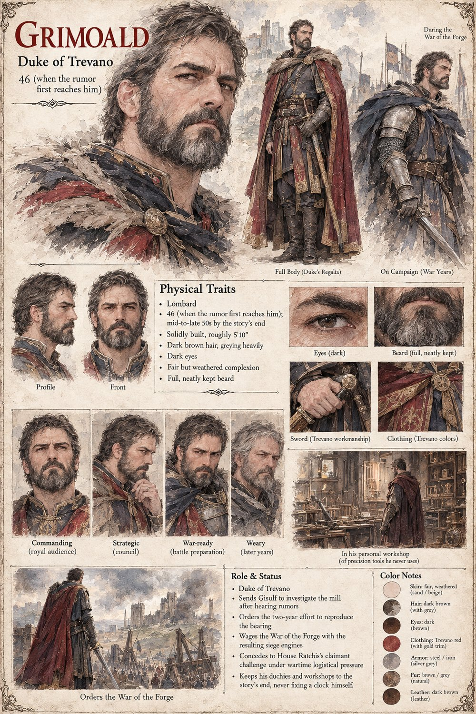

Grimoald
Duke of Trevano · 46 when the rumor reaches him
Duke of Trevano, who wanted, as a boy, to fix his grandmother's chiming clock in secret with tools stolen from the household smith, and never told anyone — not his father, not his wife, not one of the engineers he'd go on to employ by the dozen — that he'd failed. When a badly garbled rumor of a Verrasco mill reaches him at forty-six, he sends his engineer Gisulf to look, report honestly, and touch nothing without permission, and thinks, that first evening, not of siege engines but of a clock he never managed to fix.
Two years of failing to reproduce the bearing leave Trevano with something else entirely: lathes, measurement, and metalworkers trained to a precision no duchy has previously demanded. He gives the order to turn it toward siege engines three days after Gisulf names what they've actually built, and spends the rest of his life uncertain whether those three days were deliberation or merely decency's minimum interval before doing what he'd already decided. He keeps his duchies, and a personal workshop of precision tools he never once touches himself.
Appears in The Third Grain